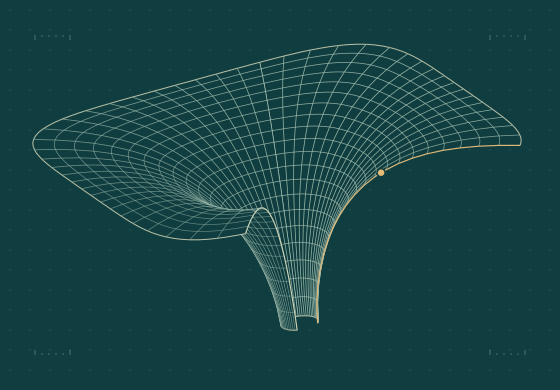

Black Hole Information & Holography
Islands, reflected entropy, entanglement negativity, partial entanglement entropy, bit threads, and bulk geometry reconstruction in AdS/CFT.
Postdoctoral researcher · SIMIS
Questions about gravity
and the universe.
At the Shanghai Institute for Mathematics and Interdisciplinary Sciences, I study gravitational physics and quantum aspects of the early universe. My research spans inflationary cosmology, black hole information, holography, and entanglement.

01Research
From the dynamics of the early universe to quantum information in gravitational systems.
Islands, reflected entropy, entanglement negativity, partial entanglement entropy, bit threads, and bulk geometry reconstruction in AdS/CFT.
Effective field theory and quantum corrections in single- and multifield inflation, including strongly non-geodesic motion, non-canonical kinetic structures, and ghost inflation.
Primordial black holes, primordial non-Gaussianity, and scalar-induced gravitational waves, with particular emphasis on gauge dependence and observable signatures.
02Selected work
Yizhou Lu · arXiv preprint · 10 November 2026
Suting Zhao, Gabriel Arenas-Henriquez, Yizhou Lu, Hamed Adami, and René Meyer · arXiv preprint · 4 November 2026
Classical and Quantum Gravity 43 (5), 055014
Journal of Cosmology and Astroparticle Physics 07 (2025), 016
Journal of Cosmology and Astroparticle Physics 11 (2025), 039
Journal of High Energy Physics 02 (2024), 191
Physical Review D 108 (2023), 123507
SciPost Physics 15 (6), 227
03Profile
My work spans early-universe cosmology and quantum information in gravitational systems. I study how primordial perturbations source gravitational waves, and how entanglement can help organize questions about black holes and bulk geometry.
Postdoctoral Researcher
Shanghai Institute for Mathematics and Interdisciplinary Sciences (SIMIS), Shanghai
Postdoctoral Researcher
Southern University of Science and Technology (SUSTech), Shenzhen
Ph.D. in Physics
Huazhong University of Science and Technology
B.Sc. in Physics
Huazhong University of Science and Technology
04Presentations
Henan Academy of Sciences · Henan, China
Seminar on Gravitation and Cosmology · Hangzhou, China
Annual Meeting of the Division of Gravitation and Relativistic Astrophysics · Hengyang, China
Chongqing Workshop on Gravitation and Cosmology
05Contact
Feel free to get in touch about research, seminars, visits, or potential collaborations.
luyz@simis.cn